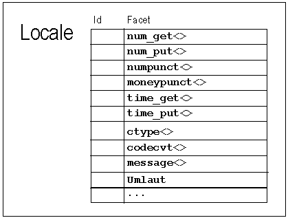

At times you may need to add a facet object to a locale without displacing any of the existing facets. To do this, you must define a new base facet class.
Here is an example of a new facet class like that. It is a facet that provides a service to check whether a character is a German umlaut, that is, one of the special characters äöüÄÖÜ.
class Umlaut : public std::locale::facet { //1
public:
static std::locale::id id; //2
Umlaut(std::size_t refs=0): std::locale::facet(refs) {} //3
bool is_umlaut(char c) const {return do_isumlaut(c);} //4
protected:
virtual bool do_isumlaut(char) const; //5
};
| //1 | All base facet classes must be derived from class std::locale::facet. |
| //2 | In addition, all base facet classes must contain a static member named id, of type std::locale::id. The locale system uses this object internally to identify the slot in locale objects where facets of this type are stored.
(Derived facet classes do not contain their own id members. Instead, they inherit the member from a base facet class, and therefore are stored in the same slot as the base class.) |
| //3 | A const member function is_umlaut() is declared that returns the result of calling the protected virtual const function do_umlaut(). All facet member functions must be const since like locale objects, facets are immutable. Since the function template std::use_facet<>() returns a const reference to a facet, only member functions declared const are callable. |
| //4 | A member function is_umlaut() is declared that returns the result of calling the protected virtual function do_umlaut(). |
| //5 | The actual functionality of determining whether a character is an umlaut is implemented in a protected virtual member function. In general, all localization services in a facet should be implemented in virtual functions this way, so that derived facets can override them when necessary. |
Now let's create a locale with a facet of the new type, as shown in Figure 12:

The code for this procedure is given below:
std::locale loc(std::locale(""), // native locale
new Umlaut); // the new facet //1
char c,d;
while (std::cin >> c){
d = std::use_facet<std::ctype<char> >(loc).tolower(c); //2
if (std::has_facet<Umlaut>(loc)) { //3
if (std::use_facet<Umlaut>(loc).is_umlaut(d)) //4
std::cout << c << "belongs to the German alphabet!" << '\n';
}
}
| //1 | A locale object is constructed with an instance of the new facet class. The locale object has all facet objects from the native locale object, plus an instance of the new facet class Umlaut. |
| //2 | Let's assume our new umlaut facet class is somewhat limited; it can handle only lower case characters. Thus we have to convert each character to a lower case character before we hand it over to the umlaut facet object. This is done by using a std::ctype facet object's service function tolower(). |
| //3 | Before we use the umlaut facet object, we check whether such an object is present in the locale. In a toy example like this it is obvious, but in a real application it is advisable to check for the existence of nonstandard facet objects before trying to use them. |
| //4 | The umlaut facet object is used, and its member function is_umlaut() is called. Note that the syntax for using this newly contrived facet object is exactly like the syntax for using the standard ctype facet. |